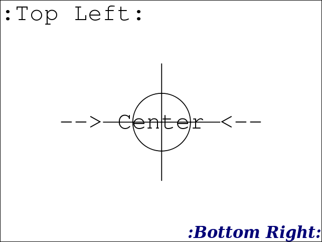

Maven Plugins
nbm-maven-plugin (available from the Maven central repository)
Fork of the codehaus nbm-maven repository --> http://svn.codehaus.org/mojo/trunk/mojo/nbm-maven
This fork mainly exists to add missing features to the webstart goal of the org.codehaus.mojo:nbm-maven-plugin.
Documentation: https://github.com/bitstrings/nbm-maven/wiki
github: https://github.com/bitstrings/nbm-maven-plugin
Latest Version: 3.11.1-2
Quick example
| <plugin>
<groupId>org.bitstrings.maven.plugins</groupId>
<artifactId>nbm-maven-plugin</artifactId>
<extensions>true</extensions>
<executions>
<execution>
<goals>
<goal>webstart-app</goal>
</goals>
<configuration>
<masterJnlpFile>src/main/webstart/${brandingToken}.jnlp</masterJnlpFile>
<masterJnlpFileName>${brandingToken}</masterJnlpFileName>
<generateJnlpApplicationTemplate>true</generateJnlpApplicationTemplate>
<additionalArguments>-J-Xms384m -J-Xmx800m -J-XX:MaxPermSize=256m</additionalArguments>
<keystore>${jarsigner.keystore}</keystore>
<keystorealias>${jarsigner.alias}</keystorealias>
<keystorepassword>${jarsigner.storepass}</keystorepassword>
<keystoretype>${jarsigner.storetype}</keystoretype>
<signingRemoveExistingSignatures>true</signingRemoveExistingSignatures>
<signingThreads>8</signingThreads>
<webappResources>
<webappResource>
<directory>src/main/resources</directory>
</webappResource>
</webappResources>
</configuration>
</execution>
</executions>
</plugin>
|
Added Features
Webstart
- Multithreaded jar signing (nbm.signing.threads);
- TSA signing - time based signing (nbm.signing.tsacert, nbm.signing.tsaurl, nbm.signing.retryCount);
- Remove existing signatures (nbm.signing.removeExistingSignatures);
- JNLP-INF/APPLICATION_TEMPLATE.JNLP support;
- Support JAR manifest security attributes (Permissions, Codebase, etc...);
- Support adding extra JAR manifest attributes;
- Webapp resources;
- Able to sign war archive;
- Fix regression: As of Java 6 > release 31 (applies to Java 7), the JDK sample directory doesn't exist anymore. The nbm maven plugin uses the jnlp servlet of sample to bootstrap the application. It is hard coded. The servlet is now part of the plugin;
- Support for m2e lifecycle mapping;
- More robust jar signing to fix edge cases;
- Pack200.
|
|
splasher-maven-plugin (available from the Maven central repository)
The splasher plugin can be used to compose a splash screen. It can complement an existing splash or create one from scratch.
Basically you can create (generate) an image from a set of components.
Documentation: http://bitstrings.github.com/sites/splasher-maven-plugin
github: https://github.com/bitstrings/splasher-maven-plugin
Quick example
| <plugin>
<groupId>org.bitstrings.maven.plugins</groupId>
<artifactId>splasher-maven-plugin</artifactId>
<executions>
<execution>
<id>splash</id>
<phase>generate-resources</phase>
<goals>
<goal>compose</goal>
</goals>
<configuration>
<resources>
<loadImage>
<imageFile>src/main/splasher/crosshair.png</imageFile>
<name>crosshair</name>
</loadImage>
<loadFont>
<fontFile>src/main/splasher/FreeMono.ttf</fontFile>
<name>font1</name>
</loadFont>
</resources>
<outputImageFile>image.png</outputImageFile>
<canvas>
<size>640x480</size>
<backgroundColor>WHITE</backgroundColor>
<draw>
<drawImage>
<imageName>crosshair</imageName>
<position>center,center</position>
</drawImage>
<drawText>
<text>--> Center <--</text>
<textColor>#000000</textColor>
<fontAntialias>HRGB</fontAntialias>
<fontName>font1</fontName>
<fontSize>48</fontSize>
<position>center,center</position>
</drawText>
<drawText>
<text>:Top Left:</text>
<textColor>#000000</textColor>
<fontName>FreeMono</fontName>
<fontSize>48</fontSize>
<position>left,top</position>
</drawText>
<drawText>
<text>:Bottom Right:</text>
<textColor>#000077</textColor>
<fontName>Serif</fontName>
<fontStyle>italic,bold</fontStyle>
<fontSize>32</fontSize>
<position>right,bottom</position>
</drawText>
</draw>
</canvas>
</configuration>
</execution>
</executions>
</plugin> |
 |
|
dependencypath-maven-plugin (available from the Maven central repository)
Sets a property pointing to the artifact file for each selected project dependency. Each
property name will have a base name in form of groupId:artifactId:type:[classifier][.relative][.suffix]. This is similar to the dependency:properties goal but with additional features, like setting a relative path and filtering.
Documentation: http://bitstrings.github.com/sites/dependencypath-maven-plugin
github: https://github.com/bitstrings/dependencypath-maven-plugin
Quick example
The set-all execution will set a property for each dependency (including transitive) of the project which value is the absolute path of the artifact as resolved by Maven. Suppose you depend on junit then you will have access to ${junit:junit:jar} which is the absolute path to the junit jar artifact.
The set-relative-builddir will set a property for each dependency (except transitive) of the project which value is the relative path (relative to ${project.build.directory}) to the artifact as resolved by Maven. Suppose you depend on junit then you will have access to ${junit:junit:jar.relative.builddir} which is the relative path to the junit jar artifact. Notice that we explicitly added the builddir suffix, while the relative suffix is implicit.
| <plugin>
<groupId>org.bitstrings.maven.plugins</groupId>
<artifactId>dependencypath-maven-plugin</artifactId>
<executions>
<execution>
<id>set-all</id>
<goals>
<goal>set</goal>
</goals>
</execution>
<execution>
<id>set-relative-builddir</id>
<goals>
<goal>set</goal>
</goals>
<configuration>
<propertySets>
<propertySet>
<suffix>builddir</suffix>
<relativeTo>${project.build.directory}</relativeTo>
<transitive>false</transitive>
</propertySet>
</propertySets>
</configuration>
</execution>
</executions>
</plugin> |
|
M2E Connectors
github: https://github.com/bitstrings/m2e-connectors
P2 Repositories
releases: http://bitstrings.github.com/m2e-connectors-p2/releases
milestones: http://bitstrings.github.com/m2e-connectors-p2/milestones
Plugin mapping
Plugin:
org.bitstrings.maven.plugins:dependencypath-maven-plugin
Home: http://bitstrings.github.com/sites/dependencypath-maven-plugin/index.html
Plugin:
org.jvnet.jaxb2.maven2:maven-jaxb2-plugin (maven-jaxb20-plugin, maven-jaxb21-plugin, maven-jaxb22-plugin)
Home: http://java.net/projects/maven-jaxb2-plugin/pages/Home
Plugin:
org.codehaus.mojo:jaxb2-maven-plugin
Home: http://mojo.codehaus.org/jaxb2-maven-plugin
(Note: not required for jaxb2-maven-plugin version 1.5+)
Plugin:
org.codehaus.mojo:xmlbeans-maven-plugin
Home: http://mojo.codehaus.org/xmlbeans-maven-plugin
|